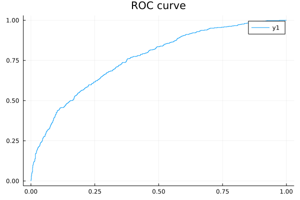
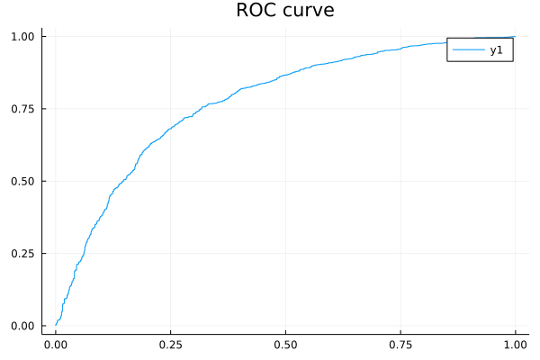

Churn Modelling Marketing Data with Julia
Contents
Churn Modelling Marketing Data with Julia¶
using Pkg
using DataFrames
using CSV
using Plots
using GLM
using StatsBase
using Lathe
using MLBase
using ClassImbalance
using ROCAnalysis
using PyCall
sklearn = pyimport("sklearn.metrics")
PyObject <module 'sklearn.metrics' from '/Users/jnapolitano/venvs/finance/lib/python3.9/site-packages/sklearn/metrics/__init__.py'>
function load_csv()
df = DataFrame(CSV.File("./Churn_Modelling.csv"))
return df
end
load_csv (generic function with 1 method)
Loading Data¶
marketing_df = load_csv()
first(marketing_df,5)
| RowNumber | CustomerId | Surname | CreditScore | Geography | Gender | Age | Tenure | |
|---|---|---|---|---|---|---|---|---|
| Int64 | Int64 | String31 | Int64 | String7 | String7 | Int64 | Int64 | |
| 1 | 1 | 15634602 | Hargrave | 619 | France | Female | 42 | 2 |
| 2 | 2 | 15647311 | Hill | 608 | Spain | Female | 41 | 1 |
| 3 | 3 | 15619304 | Onio | 502 | France | Female | 42 | 8 |
| 4 | 4 | 15701354 | Boni | 699 | France | Female | 39 | 1 |
| 5 | 5 | 15737888 | Mitchell | 850 | Spain | Female | 43 | 2 |
println(size(marketing_df))
describe(marketing_df)
(10000, 14)
| variable | mean | min | median | max | nunique | nmissing | eltype | |
|---|---|---|---|---|---|---|---|---|
| Symbol | Union… | Any | Union… | Any | Union… | Nothing | DataType | |
| 1 | RowNumber | 5000.5 | 1 | 5000.5 | 10000 | Int64 | ||
| 2 | CustomerId | 1.56909e7 | 15565701 | 1.56907e7 | 15815690 | Int64 | ||
| 3 | Surname | Abazu | Zuyeva | 2932 | String31 | |||
| 4 | CreditScore | 650.529 | 350 | 652.0 | 850 | Int64 | ||
| 5 | Geography | France | Spain | 3 | String7 | |||
| 6 | Gender | Female | Male | 2 | String7 | |||
| 7 | Age | 38.9218 | 18 | 37.0 | 92 | Int64 | ||
| 8 | Tenure | 5.0128 | 0 | 5.0 | 10 | Int64 | ||
| 9 | Balance | 76485.9 | 0.0 | 97198.5 | 2.50898e5 | Float64 | ||
| 10 | NumOfProducts | 1.5302 | 1 | 1.0 | 4 | Int64 | ||
| 11 | HasCrCard | 0.7055 | 0 | 1.0 | 1 | Int64 | ||
| 12 | IsActiveMember | 0.5151 | 0 | 1.0 | 1 | Int64 | ||
| 13 | EstimatedSalary | 1.0009e5 | 11.58 | 1.00194e5 | 1.99992e5 | Float64 | ||
| 14 | Exited | 0.2037 | 0 | 0.0 | 1 | Int64 |
# Check column names
names(marketing_df)
14-element Vector{Symbol}:
:RowNumber
:CustomerId
:Surname
:CreditScore
:Geography
:Gender
:Age
:Tenure
:Balance
:NumOfProducts
:HasCrCard
:IsActiveMember
:EstimatedSalary
:Exited
Check Class Imbalance¶
# Count the classes
countmap(marketing_df.Exited)
Dict{Int64, Int64} with 2 entries:
0 => 7963
1 => 2037
Data Preprocessing¶
One Hot Encoding¶
# One hot encoding
Lathe.preprocess.OneHotEncode(marketing_df,:Geography)
Lathe.preprocess.OneHotEncode(marketing_df,:Gender)
select!(marketing_df, Not([:RowNumber, :CustomerId,:Surname,:Geography,:Gender,:Male]))
| CreditScore | Age | Tenure | Balance | NumOfProducts | HasCrCard | IsActiveMember | |
|---|---|---|---|---|---|---|---|
| Int64 | Int64 | Int64 | Float64 | Int64 | Int64 | Int64 | |
| 1 | 619 | 42 | 2 | 0.0 | 1 | 1 | 1 |
| 2 | 608 | 41 | 1 | 83807.9 | 1 | 0 | 1 |
| 3 | 502 | 42 | 8 | 1.59661e5 | 3 | 1 | 0 |
| 4 | 699 | 39 | 1 | 0.0 | 2 | 0 | 0 |
| 5 | 850 | 43 | 2 | 1.25511e5 | 1 | 1 | 1 |
| 6 | 645 | 44 | 8 | 1.13756e5 | 2 | 1 | 0 |
| 7 | 822 | 50 | 7 | 0.0 | 2 | 1 | 1 |
| 8 | 376 | 29 | 4 | 1.15047e5 | 4 | 1 | 0 |
| 9 | 501 | 44 | 4 | 1.42051e5 | 2 | 0 | 1 |
| 10 | 684 | 27 | 2 | 1.34604e5 | 1 | 1 | 1 |
| 11 | 528 | 31 | 6 | 1.02017e5 | 2 | 0 | 0 |
| 12 | 497 | 24 | 3 | 0.0 | 2 | 1 | 0 |
| 13 | 476 | 34 | 10 | 0.0 | 2 | 1 | 0 |
| 14 | 549 | 25 | 5 | 0.0 | 2 | 0 | 0 |
| 15 | 635 | 35 | 7 | 0.0 | 2 | 1 | 1 |
| 16 | 616 | 45 | 3 | 1.43129e5 | 2 | 0 | 1 |
| 17 | 653 | 58 | 1 | 1.32603e5 | 1 | 1 | 0 |
| 18 | 549 | 24 | 9 | 0.0 | 2 | 1 | 1 |
| 19 | 587 | 45 | 6 | 0.0 | 1 | 0 | 0 |
| 20 | 726 | 24 | 6 | 0.0 | 2 | 1 | 1 |
| 21 | 732 | 41 | 8 | 0.0 | 2 | 1 | 1 |
| 22 | 636 | 32 | 8 | 0.0 | 2 | 1 | 0 |
| 23 | 510 | 38 | 4 | 0.0 | 1 | 1 | 0 |
| 24 | 669 | 46 | 3 | 0.0 | 2 | 0 | 1 |
| 25 | 846 | 38 | 5 | 0.0 | 1 | 1 | 1 |
| 26 | 577 | 25 | 3 | 0.0 | 2 | 0 | 1 |
| 27 | 756 | 36 | 2 | 1.36816e5 | 1 | 1 | 1 |
| 28 | 571 | 44 | 9 | 0.0 | 2 | 0 | 0 |
| 29 | 574 | 43 | 3 | 1.41349e5 | 1 | 1 | 1 |
| 30 | 411 | 29 | 0 | 59697.2 | 2 | 1 | 1 |
| ⋮ | ⋮ | ⋮ | ⋮ | ⋮ | ⋮ | ⋮ | ⋮ |
Split Train/and Test Data¶
# Train test split
using Lathe.preprocess: TrainTestSplit
train, test = TrainTestSplit(marketing_df,.75);
Build Model¶
# Train logistic regression model
fm = @formula(Exited ~ CreditScore + Age + Tenure + Balance + NumOfProducts + HasCrCard + IsActiveMember + EstimatedSalary + Female + France + Spain)
logit = glm(fm, train, Binomial(), ProbitLink())
StatsModels.TableRegressionModel{GeneralizedLinearModel{GLM.GlmResp{Vector{Float64}, Binomial{Float64}, ProbitLink}, GLM.DensePredChol{Float64, LinearAlgebra.Cholesky{Float64, Matrix{Float64}}}}, Matrix{Float64}}
Exited ~ 1 + CreditScore + Age + Tenure + Balance + NumOfProducts + HasCrCard + IsActiveMember + EstimatedSalary + Female + France + Spain
Coefficients:
───────────────────────────────────────────────────────────────────────────────────────
Coef. Std. Error z Pr(>|z|) Lower 95% Upper 95%
───────────────────────────────────────────────────────────────────────────────────────
(Intercept) -1.90933 0.165007 -11.57 <1e-30 -2.23274 -1.58592
CreditScore -0.000321917 0.000183184 -1.76 0.0789 -0.000680951 3.71172e-5
Age 0.040893 0.00165251 24.75 <1e-99 0.0376541 0.0441318
Tenure -0.008864 0.00611129 -1.45 0.1469 -0.0208419 0.0031139
Balance 1.65933e-6 3.30286e-7 5.02 <1e-06 1.01198e-6 2.30668e-6
NumOfProducts -0.040173 0.0309946 -1.30 0.1949 -0.100921 0.0205753
HasCrCard -0.00442931 0.0386394 -0.11 0.9087 -0.0801612 0.0713026
IsActiveMember -0.557894 0.0365213 -15.28 <1e-51 -0.629475 -0.486314
EstimatedSalary 2.2925e-7 3.07604e-7 0.75 0.4561 -3.73644e-7 8.32143e-7
Female 0.301642 0.0354259 8.51 <1e-16 0.232209 0.371076
France -0.450226 0.0446176 -10.09 <1e-23 -0.537674 -0.362777
Spain -0.443184 0.051707 -8.57 <1e-16 -0.544527 -0.34184
───────────────────────────────────────────────────────────────────────────────────────
Model Predictions and Evaluation¶
# Predict the target variable on test data
prediction = predict(logit,test)
2406-element Vector{Union{Missing, Float64}}:
0.24401107345293602
0.1266535868551322
0.031721959583257124
0.11357816519004983
0.24824114578495612
0.024688755265128235
0.14209354336141483
0.18528877855991494
0.15470097145575007
0.25962439112051505
0.15117890643161475
0.2110682947689441
0.06358192272871947
⋮
0.24899439141513482
0.23449577199293972
0.13610439167926225
0.1737934374110589
0.1341643450975004
0.5831068095078078
0.2950497674661655
0.04139159536998556
0.06795785137729822
0.017204995327274736
0.12888818685657766
0.15310112069144077
# Convert probability score to class
prediction_class = [if x < 0.5 0 else 1 end for x in prediction];
prediction_df = DataFrame(y_actual = test.Exited, y_predicted = prediction_class, prob_predicted = prediction);
prediction_df.correctly_classified = prediction_df.y_actual .== prediction_df.y_predicted
2406-element BitVector:
0
1
1
1
1
1
1
1
1
0
1
1
1
⋮
1
1
1
1
1
1
1
1
1
1
1
1
Confusion Matrix¶
# confusion_matrix = confusmat(2,prediction_df.y_actual, prediction_df.y_predicted)
confusion_matrix = MLBase.roc(prediction_df.y_actual, prediction_df.y_predicted)
ROCNums{Int64}
p = 510
n = 1896
tp = 105
tn = 1844
fp = 52
fn = 405
Results¶
The model is estimating far to many exiting cases. About 4 times the true value.
fpr, tpr, thresholds = sklearn.roc_curve(prediction_df.y_actual, prediction_df.prob_predicted)
([0.0, 0.0, 0.0, 0.0005274261603375527, 0.0005274261603375527, 0.0010548523206751054, 0.0010548523206751054, 0.0015822784810126582, 0.0015822784810126582, 0.0026371308016877636 … 0.8829113924050633, 0.9066455696202531, 0.9066455696202531, 0.9193037974683544, 0.9193037974683544, 0.92457805907173, 0.92457805907173, 0.9725738396624473, 0.9725738396624473, 1.0], [0.0, 0.00196078431372549, 0.00392156862745098, 0.00392156862745098, 0.00784313725490196, 0.00784313725490196, 0.01568627450980392, 0.01568627450980392, 0.03137254901960784, 0.03137254901960784 … 0.9921568627450981, 0.9921568627450981, 0.9941176470588236, 0.9941176470588236, 0.996078431372549, 0.996078431372549, 0.9980392156862745, 0.9980392156862745, 1.0, 1.0], [1.8467335270755767, 0.8467335270755767, 0.8140811888019499, 0.8092555110984978, 0.7970873802691381, 0.79684704533007, 0.7719016175181805, 0.7709263202992206, 0.7060214606993195, 0.6994801619873218 … 0.04233143871590189, 0.03786940431261241, 0.037850945580692276, 0.035665362242897694, 0.03532968973176317, 0.03416668456674327, 0.03407543014692377, 0.020932892669754958, 0.020885871157504798, 0.00597005405256463])
# Plot ROC curve
plot(fpr, tpr)
title!("ROC curve")

The Class Imbalance Problem¶
# Count the classes
countmap(marketing_df.Exited)
Dict{Int64, Int64} with 2 entries:
0 => 7963
1 => 2037
Smote to fix imbalance¶
X2, y2 =smote(marketing_df[!,[:CreditScore,:Age ,:Tenure, :Balance, :NumOfProducts, :HasCrCard, :IsActiveMember, :EstimatedSalary, :Female , :France, :Spain]], marketing_df.Exited, k = 5, pct_under = 150, pct_over = 200)
df_balanced = X2
df_balanced.Exited = y2;
df = df_balanced;
# Count the classes
countmap(df.Exited)
Dict{Int64, Int64} with 2 entries:
0 => 6111
1 => 6111
Retest¶
# Train test split
train, test = TrainTestSplit(df,.75);
# Model Building
fm = @formula(Exited ~ CreditScore + Age + Tenure + Balance + NumOfProducts + HasCrCard + IsActiveMember + EstimatedSalary + Female + France + Spain)
logit = glm(fm, train, Binomial(), ProbitLink())
# Predict the target variable on test data
prediction = predict(logit,test)
# Convert probability score to class
prediction_class = [if x < 0.5 0 else 1 end for x in prediction];
prediction_df = DataFrame(y_actual = test.Exited, y_predicted = prediction_class, prob_predicted = prediction);
prediction_df.correctly_classified = prediction_df.y_actual .== prediction_df.y_predicted
# Accuracy Score
accuracy = mean(prediction_df.correctly_classified)
print("Accuracy of the model is : ",accuracy)
# Confusion Matrix
confusion_matrix = MLBase.roc(prediction_df.y_actual, prediction_df.y_predicted)
Accuracy of the model is : 0.7169563791407019
ROCNums{Int64}
p = 1550
n = 1499
tp = 1091
tn = 1095
fp = 404
fn = 459
fpr, tpr, thresholds = sklearn.roc_curve(prediction_df.y_actual, prediction_df.prob_predicted)
# Plot ROC curve
([0.0, 0.0, 0.0, 0.00066711140760507, 0.00066711140760507, 0.00133422281521014, 0.00133422281521014, 0.0020013342228152103, 0.0020013342228152103, 0.00266844563042028 … 0.9846564376250834, 0.9893262174783188, 0.9893262174783188, 0.9913275517011341, 0.9913275517011341, 0.9973315543695798, 0.9986657771847899, 0.9993328885923949, 0.9993328885923949, 1.0], [0.0, 0.0006451612903225806, 0.0025806451612903226, 0.0025806451612903226, 0.005161290322580645, 0.005161290322580645, 0.007741935483870968, 0.007741935483870968, 0.00903225806451613, 0.00903225806451613 … 0.9980645161290322, 0.9980645161290322, 0.9987096774193548, 0.9987096774193548, 0.9993548387096775, 0.9993548387096775, 0.9993548387096775, 0.9993548387096775, 1.0, 1.0], [1.9907624292252022, 0.9907624292252022, 0.983731024429679, 0.97951657298985, 0.9730082291507035, 0.9713532719467679, 0.9629327481173712, 0.9604203755106321, 0.9593444340323958, 0.9584649467140461 … 0.06923199350115271, 0.06553287523911823, 0.06469253560487893, 0.058594401854125504, 0.057872556108602216, 0.034170953161915506, 0.03357051125028141, 0.03297342671224324, 0.030937011626933943, 0.023743078872535135])
plot(fpr, tpr)
title!("ROC curve")

Final Discussion¶
When accounting for class imbalance, the model accuracy is reduced to 71 percent from about 81 percent.
While this seems counterintutive, the second model is actually a better model overall.
The model with 81 percent accuracy is simply more accurate by chance. The bin of exits to remains is far larger. Thus, reported accuracy is higher.
When the classes are normalized, we see a prediction of about 71 percent. Confidently, I can say that this model would scale appropriately.
The first model on the other hand would scale to about 25-30 percent accuracy.